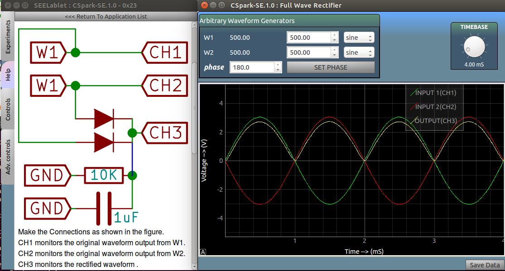

Full Wave Rectifier

Make the Connections as shown in the figure.
CH1 monitors the original waveform output from W1.
CH2 monitors the original waveform output from W2.
CH3 monitors the rectified waveform .
Connect a load resistor to remove noise from the output.
to observe the effect of filtering, connect a capacitor to GND.
Connect various capacitors to study how their values affect the output signal.
Screenshot
